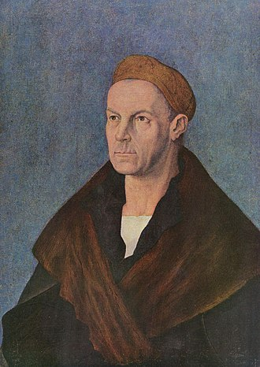
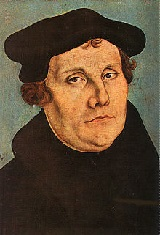
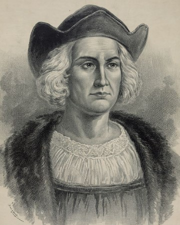
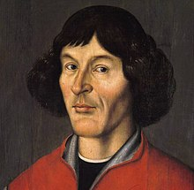

|  | Jakob Fugger of the Lily (German: Jakob Fugger von der Lilie) (6 March 1459 – 30 December 1525), also known as Jakob Fugger the Rich or sometimes Jakob II, was a major German merchant, mining entrepreneur and banker. He was a descendant of the Fugger merchant family located in the Free Imperial City of Augsburg, where he was born and later also elevated through marriage to Grand Burgher of Augsburg (German Großbürger zu Augsburg). Within a few decades he expanded the family firm to a business operating in all of Europe. He began his education at the age of 14 in Venice, which also remained his main residence until 1487. At the same time he was a cleric and held several prebendaries, even though he never lived in a monastery. Fugger is held to be one of the wealthiest individuals in modern history. |
 |
Johannes GutenbergIn 1882, with 2 associates, newspaperman Charles Henry Dow founded Dow Jones and Company, a news agency for the financial world. The Journal took its modern shape and prominence in the 1940s, a time of industrial expansion for the United States and its financial institutions in New York. The Wall Street Journal is a special paper for people in the business and economic communities, yet it goes far beyond that designation in its treatment of the news. |
|  |
Martin LutherWas a German professor of theology, composer, priest and a seminal figure in the Protestant Reformation. Luther was ordained to the priesthood in 1507. He came to reject several teachings and practices of the Roman Catholic Church; in particular, he disputed the view on indulgences. Luther proposed an academic discussion of the practice and efficacy of indulgences in his Ninety-five Theses of 1517. His refusal to renounce all of his writings at the demand of Pope Leo X in 1520 and the Holy Roman Emperor Charles V at the Diet of Worms in 1521 resulted in his excommunication by the pope and condemnation as an outlaw by the Holy Roman Emperor. |
|  |
Christopher ColumbusWas an Italian explorer, navigator, and colonist who completed four voyages across the Atlantic Ocean under the auspices of the Catholic Monarchs of Spain. He led the first European expeditions to the Caribbean, Central America, and South America, initiating the permanent European colonization of the Americas. Columbus discovered the viable sailing route to the Americas, a continent that was then unknown to the Old World. While what he thought he had discovered was a route to the Far East, he is credited with the opening of the Americas for conquest and settlement by Europeans. |
 |
MichelangeloWas an Italian sculptor, painter, architect and poet of the High Renaissance born in the Republic of Florence, who exerted an unparalleled influence on the development of Western art. Considered by many the greatest artist of his lifetime, and by some the greatest artist of all time, his artistic versatility was of such a high order that he is often considered a contender for the title of the archetypal Renaissance man, along with his rival, the fellow Florentine and client of the Medici. |
|  |
Nicolaus Copernicuswas a Renaissance-era mathematician and astronomer, who formulated a model of the universe that placed the Sun rather than the Earth at the center of the universe, in all likelihood independently of Aristarchus of Samos, who had formulated such a model some eighteen centuries earlier |